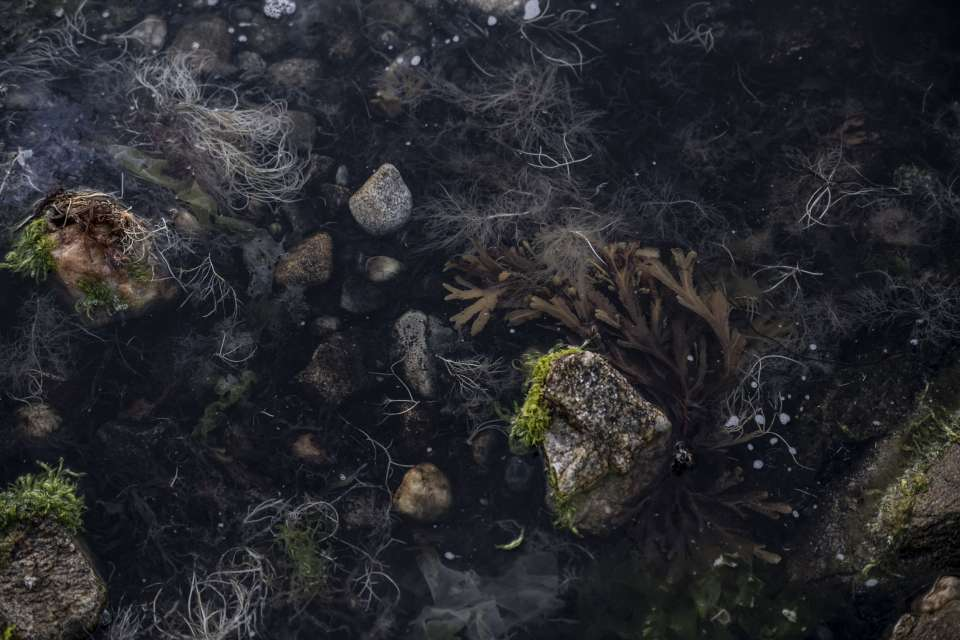

Top Pick
🚶 30 m walk
Relais & Châteaux
5 rooms
€180 – €275
Alexandre and Céline Couillon built these five rooms at 7 Rue Marie Lemonnier — the same street as the restaurant at no. 3. You walk 30 metres to bed after the tasting menu. Wood, metal and warm fabrics echo the working fishing port. Rooms: Lutins (ground floor, €180), Blanche and Jean (€250), Madeleine and Clère (sleeps up to 4, €275). Breakfast €25 per person. Book when you book the table — five rooms against three-star demand means it fills months ahead. [1][20]